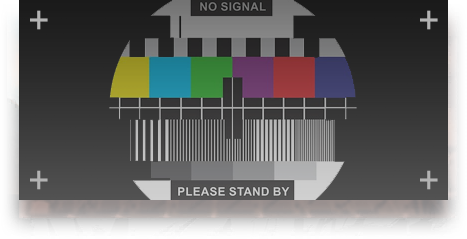

v0.1 draft
通用组件 Core components
按钮 · Button
标签 · Tag / Chip / Badge
默认描边强调浅强调黄信息成功警告危险反转NEWLabel可移除1232
筛选 Chips近卫狙击术师六星五星可公招
卡片与面板 · Card / Panel

Side Story
怒号光明
卡片：1px 边框、直角、悬停时青色描边与上移 2px。
已选中卡片
selected选中态 = 青色 1px 内描边 + 左上角三角角标（源自游戏内技能选中框）。
左色条卡片
用于公告、提示、天赋条目。
今日信息Today
周五面板：标题栏左侧色条 + 表面 2 底色。可折叠变体见下方。
公告Notice
反转标题栏（黑底）变体，点击标题折叠。
标签页 · Tabs（皮肤内 JS 版）
下划线标签页（默认）。
技能面板。
模组面板。
档案面板。
消息 · Message / Toast / Dialog / Tooltip / Dropdown
Tooltip（悬停）
下拉菜单 ▾
进度 / 统计 / 骨架 / 空状态
信赖 TRUST200 / 200
75%
30%
Operators356+4 本月
Stages1,204
Edits / 24h2.3k-12%
暂无数据
尝试更换筛选条件
头像 / 面包屑 / 分页 / 时间线 / 步骤


 DR
DR +9
+9- 2019.04.30公开测试开启明日方舟正式上线。
- 2026.08.012.7.61 版本当前数据版本。
- TBA下一版本
精英零
精英一
精英二
满级
OR
表单 · Forms
设计系统的表单组件（.ak-input .ak-select .ak-check .ak-switch …）与 Widget / Gadget 直接吐出的裸控件是同一套规则（规范 §4）：36px 定高、2px 角、同一枚 ▾ 箭头、同一张勾选框 / 圆形单选。上半是组件写法，下半是什么 class 都没有的裸控件落进 wikitable 的样子。
支持中文名 / 代号 / 拼音
wiki/
格式不正确
等级90
落进 wikitable 的裸控件 · Widget / Gadget 产物
干员页「属性计算器」（Widget:PropertyCalc）就是一张 wikitable 里放四个什么 class 都没有的 <input type="number">，wiki 上这类计算器 / 筛选栏很多。皮肤对裸控件的规则见规范 §4：36px 定高（border-box，不随容器行高漂）；落进表格单元格自动收到 30px、字号跟表格、文本对齐跟随单元格——下面居中的表里输入的数字和结果一样居中，td.num 里的输入右对齐；宽度不接管（这张表自己写了 width:100%），一格里「输入 + 按钮」照常并排。只读 = 下沉底，禁用 = surface-3，改坏了（:user-invalid）= 红边。
| 属性计算器 | |||
|---|---|---|---|
| 生命上限 | 攻击 | 防御 | 法术抗性 |
| 2880 | 660 | 402 | 0 |
| 筛选 | |
|---|---|
| 职业 | |
| 数值列 | |
| 状态 |
手风琴 / 数据表
什么是 AKDS？
明日方舟网页设计系统，为 prts.wiki 皮肤设计。
为什么不用 Codex 默认外观？
Codex 令牌被桥接到
--ak-*，核心 / 扩展 UI 自动跟随；但视觉语言完全按明日方舟本体重建，而不是套一层配色。| 阶段 | 等级上限 | 生命 | 攻击 | 防御 |
|---|---|---|---|---|
| 精英零 | 50 | 1684 | 361 | 221 |
| 精英一 | 80 | 2188 | 469 | 288 |
| 精英二 | 90 | 2880 | 610 | 352 |
本页面最后编辑于 2026年8月19日 (三) 22:30。本站文本采用 CC BY-NC-SA 4.0 授权。游戏素材版权归鹰角网络所有。